# Object Detection ## **Design of Autonomous Systems** ### csci 6907/4907-Section 86 ### Prof. **Sibin Mohan** --- autonomous vehicle uses sensory input devices (cameras, radar and lasers) --- autonomous vehicle uses sensory input devices (cameras, radar and lasers) <br> <br> **how** does it actually "perceive"? --- perception involves not just identifying that an object exists, but also, --- perception involves not just identifying that an object exists, but also, ||| |:-----|:------| |object **classification**| **what** is it?| --- perception involves not just identifying that an object exists, but also, ||| |:-----|:------| |object **classification**| **what** is it?| |object **localization** | **where** is it?| || --- consider a **camera**, --- consider a **camera**, |||| |:-----|:------|:------| |object **classification**| **what** is it?|**recognizing** objects <br>(cars, traffic lights, pedestrians)| |object **localization** | **where** is it?|| || --- consider a **camera**, |||| |:-----|:------|:------| |object **classification**| **what** is it?|**recognizing** objects <br>(cars, traffic lights, pedestrians)| |object **localization** | **where** is it?|generating **bounding boxes**| || --- consider a **camera**, <p>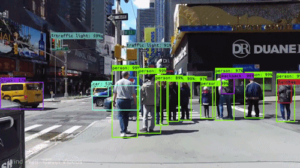</p> --- multiple **classes** of object detection and localization methods, 1. classical [**computer vision** methods](#computer-vision-methods) 2. [**deep-learning** based methods](#deep-learning-methods) --- ## Computer Vision Methods --- ### 1. [Histogram of Gradient Objects](https://medium.com/analytics-vidhya/a-gentle-introduction-into-the-histogram-of-oriented-gradients-fdee9ed8f2aa) (HOG) --- ### 1. Histogram of Gradient Objects (HOG) - mainly used for face and image detection --- ### 1. Histogram of Gradient Objects (HOG) - mainly used for face and image detection - image ($width \times height \times channels$) → feature vector, length $n$ - $n$ → chosen by user Note: - convert the image to a feature vector --- ### 1. Histogram of Gradient Objects (HOG) - mainly used for face and image detection - image ($width \times height \times channels$) → feature vector, length $n$ - $n$ → chosen by user - **histogram of gradients** → used as image "features" --- HOG example <p>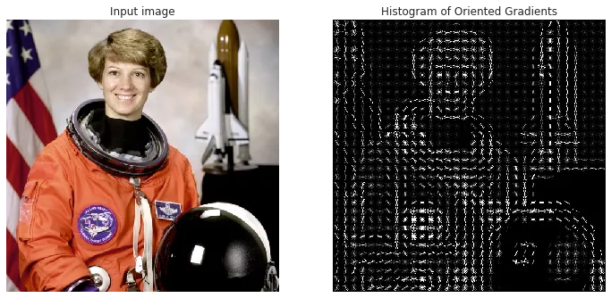</p> --- gradients are **important** --- gradients are **important** - check for **edges** and **corners** in image - through **regions of intensity changes** --- gradients are **important** - check for **edges** and **corners** in image - through **regions of intensity changes** - often pack much more information than flat regions --- ### 2. [Scale Invariant Feature Transform](https://medium.com/@deepanshut041/introduction-to-sift-scale-invariant-feature-transform-65d7f3a72d40) (SIFT) --- ### 2. Scale Invariant Feature Transform (SIFT) - extracting **distinctive invariant features** from images --- ### 2. Scale Invariant Feature Transform (SIFT) - extracting **distinctive invariant features** from images - **reliable matching** → between different **views** of an object or scene --- ### 2. Scale Invariant Feature Transform (SIFT) - extracting **distinctive invariant features** from images - **reliable matching** → between different **views** of an object or scene - finds **keypoints** in an image that do not change --- finds **keypoints** based on, - scale - rotation - illumination --- SIFT example <p>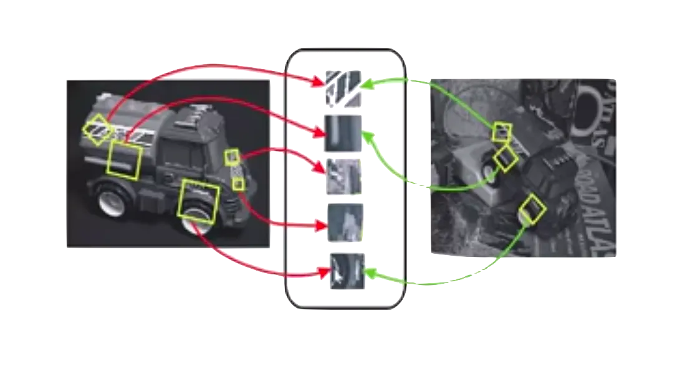</p> --- - image recognition → matches individual features to **database** - database → known objects --- - image recognition → matches individual features to **database** - database → known objects - using a fast nearest-neighbor algorithm --- SIFT → robustly identify objects --- SIFT → robustly identify objects while achieving **near real-time** performance --- ### 3. [Viola-Jones Detector](https://www.mygreatlearning.com/blog/viola-jones-algorithm/) --- ### 3. [Viola-Jones Detector] - used to accurately identify and analyze **human faces** --- ### 3. [Viola-Jones Detector] - used to accurately identify and analyze **human faces** - mainly works with grayscale images --- ### 3. [Viola-Jones Detector] - given an image → looks at many smaller subregions --- ### 3. [Viola-Jones Detector] - given an image → looks at many smaller subregions - tries to find a face → looking for **specific features in each subregion** --- ### 3. [Viola-Jones Detector] - given an image → looks at many smaller subregions - tries to find a face → looking for **specific features in each subregion** - check many different positions and scales - image can contain **many faces** of **various sizes** --- uses **Haar-like features** to detect faces > [Haar wavelets](https://en.wikipedia.org/wiki/Haar_wavelet) → sequence of rescaled “square-shaped” functions which together form a wavelet family or basis --- Viola-Jones example <p>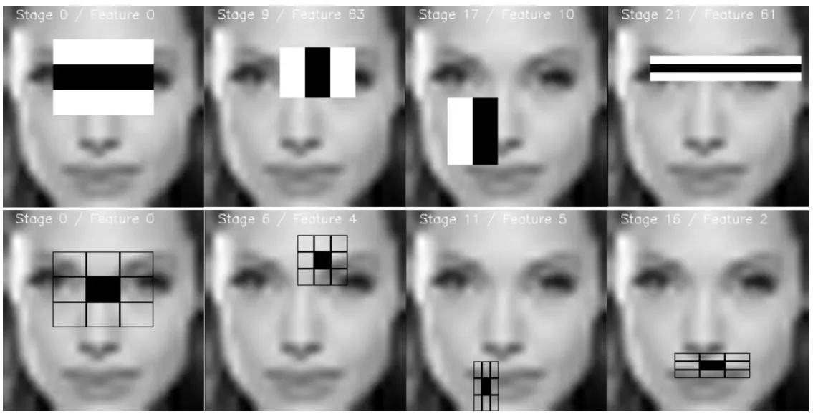</p> --- [textbook](https://autonomy-course.github.io/textbook/autonomy-textbook.html#computer-vision-methods) has links to the actual papers --- ## Deep-Learning Methods --- ## Deep-Learning Methods use **neural networks** → classification, regression, representation --- ### neural networks --- ### neural networks inspiration from biological neuroscience --- ### neural networks inspiration from biological neuroscience - stacking artificial "neurons" into **layers** --- ### neural networks inspiration from biological neuroscience - stacking artificial "neurons" into **layers** - "training" them to process data --- ### neural networks inspiration from biological neuroscience - stacking artificial neurons into **layers** - "training" them to process data <br> <br> "deep" → multiple layers (<scb>3</scb> to <scb>1000s</scb>) in the network --- a brief detour... into **neural networks** --- a brief detour... into **neural networks** no way I can possibly speedrun all of neural networks in one class! --- ### computational graphs --- ### computational graphs - representation of mathematical operations - using **directed acyclic** graphs --- ### computational graphs - representation of mathematical operations - using **directed acyclic** graphs - used by neural networks for computation --- ### computational graphs | | | |---|---| | nodes can be **variables** or **functions** | <p>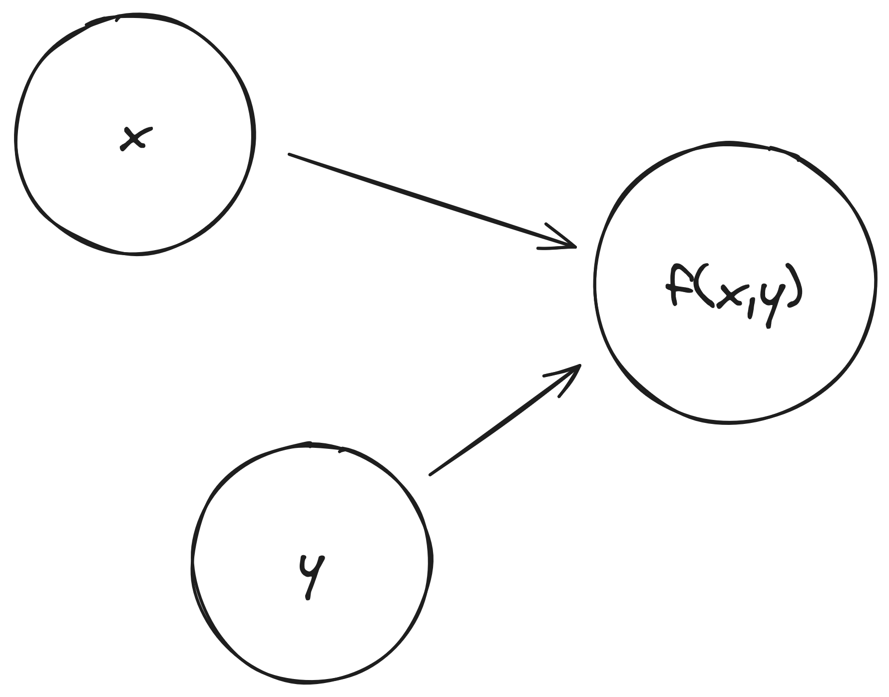</p> | || --- ### computational graphs | | | |---|---| | nodes can be **variables** or **functions** <br> edges represent **flow of data** | | || --- ### computational graphs | | | |---|---| | nodes can be **variables** or **functions** <br> edges represent **flow of data** <br> leaf nodes → **inputs**/**parameters** | | || --- ### computational graphs | | | |---|---| | nodes can be **variables** or **functions** <br> edges represent **flow of data** <br> leaf nodes → **inputs**/**parameters** <br> internal nodes → **operations** | | || --- ### computational graphs | | | |---|---| | nodes can be **variables** or **functions** <br> edges represent **flow of data** <br> leaf nodes → **inputs**/**parameters** <br> internal nodes → **operations** | | || computation **strictly** proceeds: inputs → outputs --- consider a simple example... --- consider a simple example... - a _single_ neuron computes, $y = x_1 w_1 + x_2 w_2$ --- consider a simple example... - a _single_ neuron computes, $y = x_1 w_1 + x_2 w_2$ - drawn as a graph - two multiplciation nodes - feeding into a summation node --- consider a simple example... - a _single_ neuron computes, $y = x_1 w_1 + x_2 w_2$ - drawn as a graph - two multiplciation nodes - feeding into a summation node directed edges carry **values** forward and **gradients** backward --- ### neural networks are **precisely** such graphs --- ### neural networks are **precisely** such graphs - many layers of _parameterized_ operations --- ### neural networks are **precisely** such graphs - many layers of _parameterized_ operations - every deep learning framework (_e.g.,_ PyTorch, TensorFlow, JAX) --- ### neural networks are **precisely** such graphs - many layers of _parameterized_ operations - every deep learning framework (_e.g.,_ PyTorch, TensorFlow, JAX) - builds internal computation graphs - traversed in **reverse** order - compute gradients --- ### key insight keep the following separate: --- ### key insight keep the following separate: |concern|description| |------|-------| | **data** | input values $\vec{x}$ fed to the network <br> (e.g., pixel values of an image) | --- ### key insight keep the following separate: |concern|description| |------|-------| | **data** | input values $\vec{x}$ fed to the network <br> (e.g., pixel values of an image) | | **weight** | learnable parameters $\vec{w}$ <br> that network adjusts during training | --- ### key insight keep the following separate: |concern|description| |------|-------| | **data** | input values $\vec{x}$ fed to the network <br> (e.g., pixel values of an image) | | **weight** | learnable parameters $\vec{w}$ <br> that network adjusts during training | | **structures** | graph topology <br> which ops connect to which inputs | || --- ### key insight |concern|graphical example| |------|-------| | **data** <br> **weight** <br> **structures** | <p>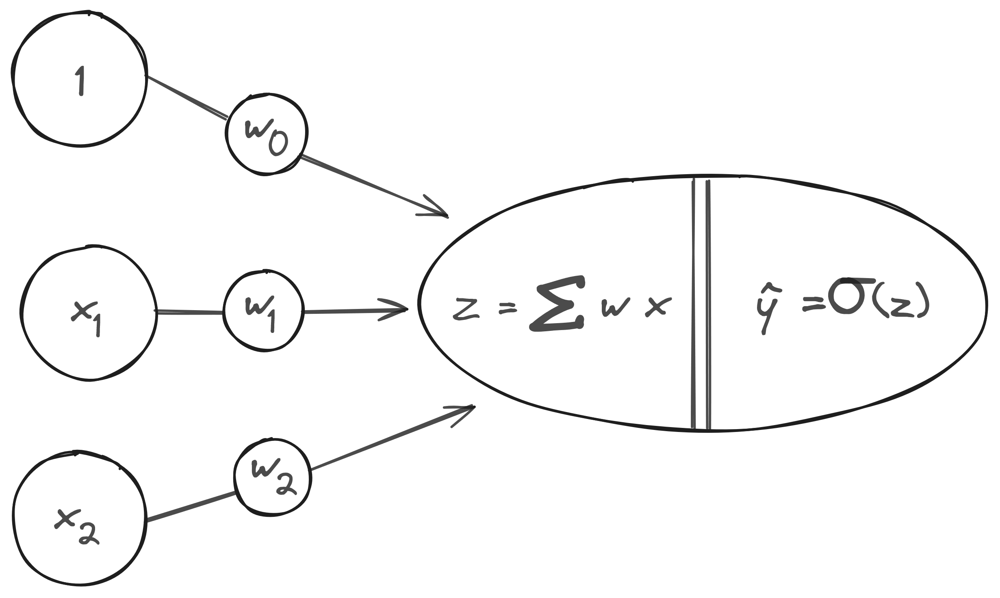</p>| || --- ### separating data, weights, structure --- ### separating data, weights, structure |concern|changes/static| |------|-------| | data | changes during **inference** | --- ### separating data, weights, structure |concern|changes/static| |------|-------| | data | changes during **inference** | | weight | changes during **training** | --- ### separating data, weights, structure |concern|changes/static| |------|-------| | data | changes during **inference** | | weight | changes during **training** | | structures | stays **fixed** | || --- ### neuron computation <p>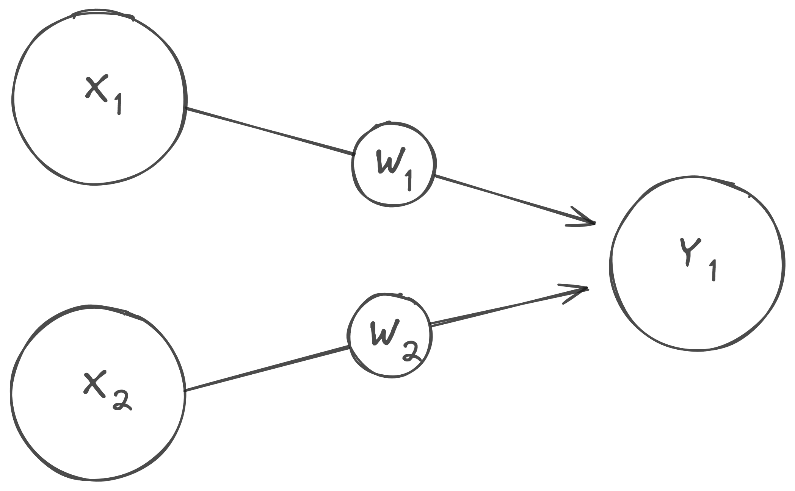</p> --- ### neuron computation | | | |---|---| | computes **weighted sum** of inputs | | || --- ### neuron computation | | | |---|---| | computes **weighted sum** of inputs <br> with two inputs, $x_1$ and $x_2$ <br> corresponding weights $w_1$ and $w_2$ | | || --- ### neuron computation | | | |---|---| | computes **weighted sum** of inputs <br> with two inputs, $x_1$ and $x_2$ <br> corresponding weights $w_1$ and $w_2$ <br> $$\sum x \times w = y$$ | | || --- ### neuron computation | | | |---|---| | computes **weighted sum** of inputs <br> with two inputs, $x_1$ and $x_2$ <br> corresponding weights $w_1$ and $w_2$ <br> $$\sum x \times w = y$$ which is a **dot product** | | || --- ### neuron computation | | | |---|---| | $$\sum x \times w = y$$ can be represented as **vectors** | | || --- ### neuron computation | | | |---|---| | $$\sum x \times w = y$$ $$\begin{bmatrix}x_1 & x_2\end{bmatrix} \cdot \begin{bmatrix}w_1 \\ w_2\end{bmatrix} = y $$ | | || --- ### neuron computation | | | |---|---| | $\sum x \times w = y$ <br><br> $\begin{bmatrix}x_1 & x_2\end{bmatrix} \cdot \begin{bmatrix}w_1 \\ w_2\end{bmatrix} = y$ <br><br> $\vec{x} \cdot \vec{w} = y$ | | || --- ### vector formulation is crucial - enables efficient **parallel** computation - on modern hardware (GPUs) --- ## vector formulation - a full layer with $n$ input neurons --- ## vector formulation - a full layer with $n$ input neurons - represented as matrix multiplication: $\mathbf{y} = \mathbf{W}\mathbf{x}$, where $\mathbf{W} \in \mathbb{R}^{m \times n}$ --- ### linear regression computational graph --- ### linear regression computational graph - simplest example of "learnable component" --- ### linear regression computational graph - given → inputs $x_1$, $x_2$ with weights $w_1$,$w_2$ --- ### linear regression computational graph - given → inputs $x_1$, $x_2$ with weights $w_1$,$w_2$ $$\hat{y} = f(w_1, x_1) + g(w_2, x_2) = w_1 x_1 + w_2 x_2$$ --- ### linear regression computational graph - given → inputs $x_1$, $x_2$ with weights $w_1$,$w_2$ $$\hat{y} = f(w_1, x_1) + g(w_2, x_2) = w_1 x_1 + w_2 x_2$$ <p>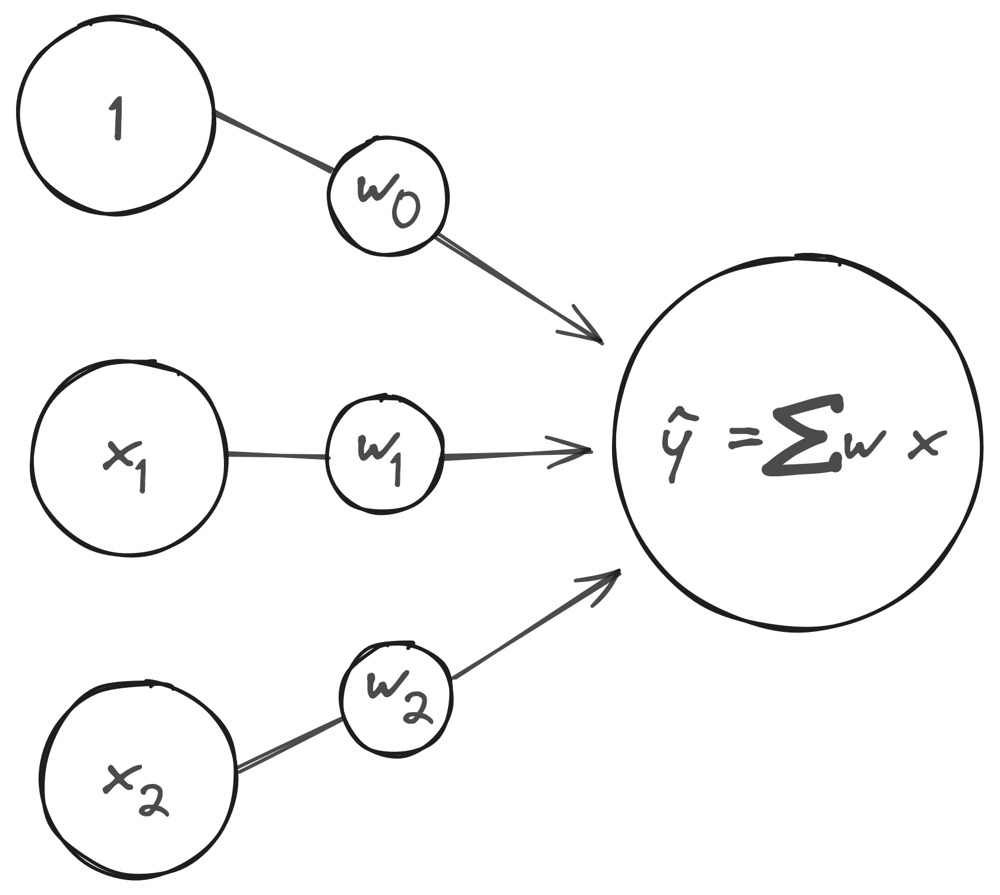</p> --- ### linear regression computational graph ||| |------|------| | | multiplication nodes → $f$, $g$ | --- ### linear regression computational graph ||| |------|------| | | multiplication nodes → $f$, $g$ <br> feeding into summation node → $\hat{y}$ | --- ### linear regression computational graph ||| |------|------| | | multiplication nodes → $f$, $g$ <br> feeding into summation node → $\hat{y}$ <br> each quantity → has a **precise mathematical rule** | --- ### linear regression computational graph ||| |------|------| | | multiplication nodes → $f$, $g$ <br> feeding into summation node → $\hat{y}$ <br> each quantity → has a **precise mathematical rule** <br> every operation → **well-defined derivative**| || --- this is what makes **backpropagation** possible --- <p>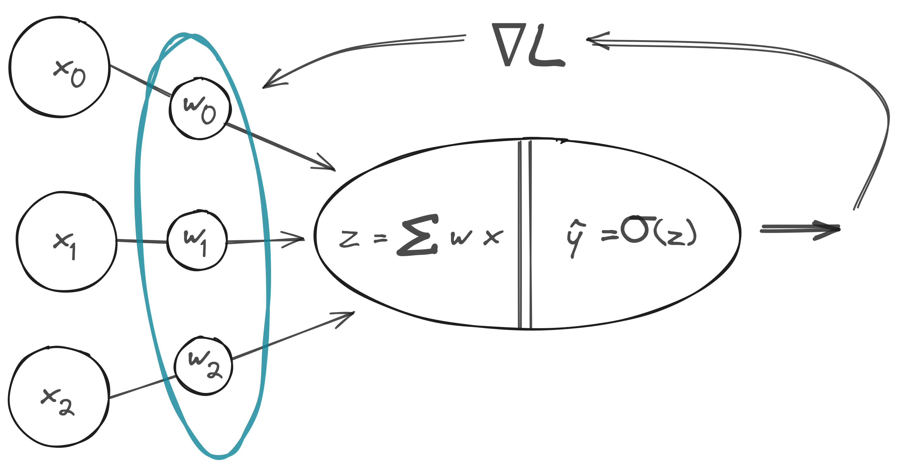</p> Note: - at some point we need to be able to send "feedback" to the neural net --- ### backpropagation --- training a neural network... --- training a neural network... - finding weight values $\vec{w}$ --- training a neural network... - finding weight values $\vec{w}$ - make network's outputs $\hat{y}$ match → ground-truth labels $y$ --- measure **mismatch** between outputs and ground-truths --- mismatch measured via → **loss function** --- mismatch measured via → **loss function** $$\mathcal{L} = (y - \hat{y})^2$$ (mean square error) --- ### training --- ### training - optimization problem --- ### training - optimization problem - minimise $\mathcal{L}$ over → weight space --- ### training - optimization problem - minimise $\mathcal{L}$ over → weight space - iteratively moving weights --- ### training - optimization problem - minimise $\mathcal{L}$ over → weight space - iteratively moving weights - in the direction that **reduces loss** --- so we need a way to **update** the graph... --- so we need a way to **update** the graph... ...rather the **weights** --- ### gradient descent | update rule --- ### gradient descent | update rule <p>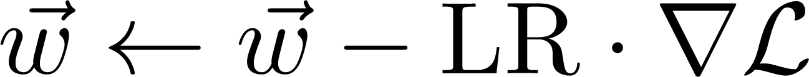</p> --- ### gradient descent | update rule <p>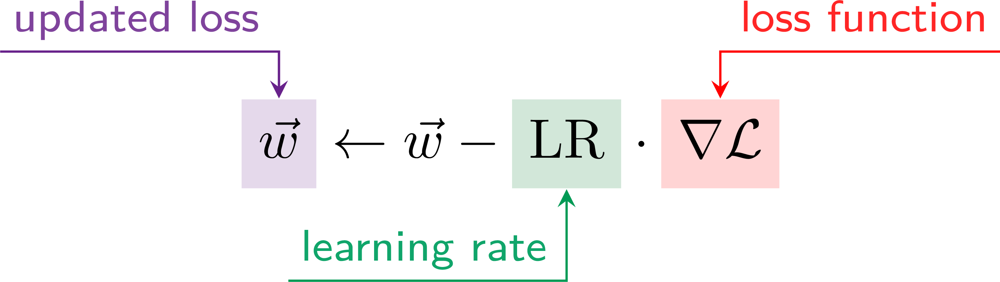</p> --- ### "learning rate" | $LR$ - **step size** your algorithm takes - trying to find _bottom_ of a hill - point of **minimum error** --- ### "learning rate" | $LR$ - **step size** your algorithm takes - trying to find _bottom_ of a hill - point of **minimum error** <br> <br> typically very small positive number → $0.1-10^{-5}$ Note: When a model is learning, it calculates which direction it needs to move to make fewer mistakes. The learning rate is the dial that controls how far it moves in that direction during each update. It is typically a very small positive number, often between $0.1$ and $10^{-5}$. --- ### backpropagation | updating the graph $$ \vec{w} = \vec{w} - LR \cdot \nabla L$$ --- - key quantity → $\nabla \mathcal{L}$ - gradient of loss w.r.t. **every weight** in the network --- ### multiplication → explicit <p>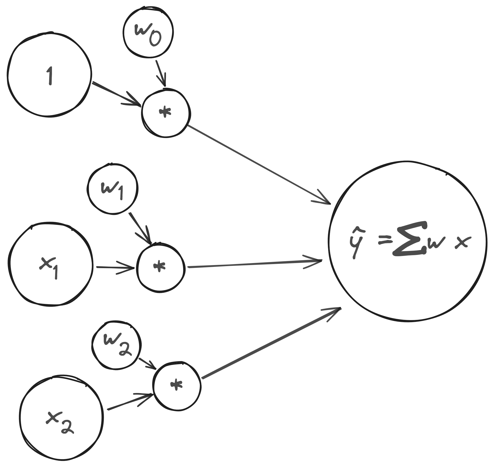</p> --- ### "simplified" <p>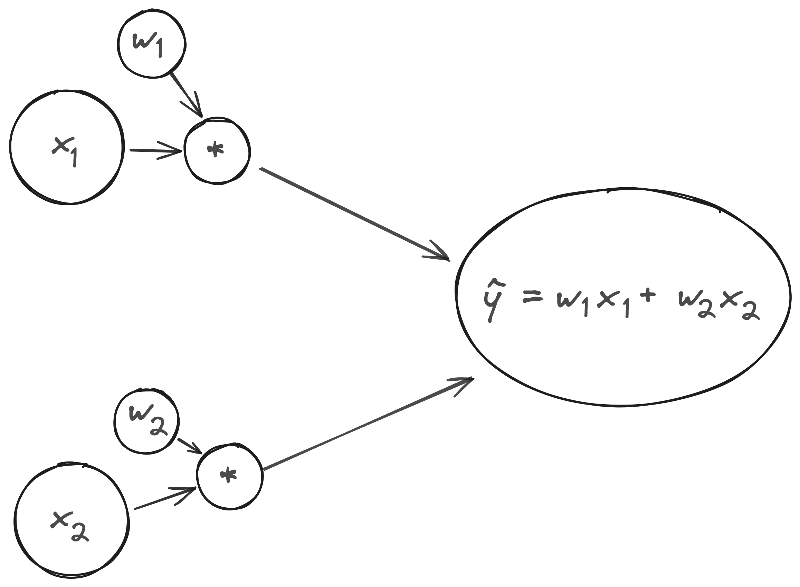</p> --- ### chain rule --- ### chain rule - backpropagation → efficient application of **chain rule** --- ### chain rule - backpropagation → efficient application of **chain rule** - for a composition of functions, $f(x) = f(g(x))$: --- ### chain rule - backpropagation → efficient application of **chain rule** - for a composition of functions, $f(x) = f(g(x))$: $$\frac{\partial f}{\partial x} = \frac{\partial f}{\partial g}\frac{\partial g}{\partial x}$$ --- ### chain rule - backpropagation → efficient application of **chain rule** - for a composition of functions, $f(x) = f(g(x))$: $$\frac{\partial f}{\partial x} = \frac{\partial f}{\partial g}\frac{\partial g}{\partial x}$$ <br> <br> but what does this mean..._in practice_? --- but what does this mean..._in practice_? $$\frac{\partial f}{\partial x} = \frac{\partial f}{\partial g}\frac{\partial g}{\partial x}$$ --- but what does this mean..._in practice_? $$\frac{\partial f}{\partial x} = \frac{\partial f}{\partial g}\frac{\partial g}{\partial x}$$ gradient flowing _back_ through a node equals... --- but what does this mean..._in practice_? $$\frac{\partial f}{\partial x} = \frac{\partial f}{\partial g}\frac{\partial g}{\partial x}$$ gradient flowing _back_ through a node equals... <br> gradient from _output_ --- but what does this mean..._in practice_? $$\frac{\partial f}{\partial x} = \frac{\partial f}{\partial g}\frac{\partial g}{\partial x}$$ gradient flowing _back_ through a node equals... <br> gradient from _output_ **$\times$** node's own _local derivative_ --- but, why do we care about **derivatives**? Note: Imagine you are standing on a foggy mountain (representing the network's loss or error) and your goal is to get to the bottom (the lowest error possible). Because of the fog, you can't see the bottom. Without derivatives, you'd have to take a step in a random direction, see if the altitude went down, and repeat. With millions of knobs, this would take forever. The derivative tells you the exact slope of the ground right under your feet. By moving in the opposite direction of the gradient (gradient descent), you are guaranteed to be taking the most efficient step down the mountain. --- a derivative tells you → **exact slope** in front of you --- a derivative tells you → **exact slope** in front of you we want to move in a direction **opposite** that of the gradient --- a derivative tells you → **exact slope** in front of you we want to move in a direction **opposite** that of the gradient <br> <br> ### gradient **descent** --- ### gradient descent and derivatives - if a neural network is a giant machine --- ### gradient descent and derivatives - if a neural network is a giant machine - with millions of knobs (weights and biases) --- ### gradient descent and derivatives - if a neural network is a giant machine - with millions of knobs (weights and biases) - derivative → **compass** that tells us --- ### gradient descent and derivatives - if a neural network is a giant machine - with millions of knobs (weights and biases) - derivative → **compass** that tells us - which way to turn each knob - to make the machine _better_ at its job --- ### gradient descent and derivatives [contd.] - good for **quick** optimizations - assigning credit/blame at fine granularity - scalability --- but also comes with problems - "_vanishing_" and "_exploding_" gradients --- let's look at a concrete example... ### Backpropagation through Linear Regression --- consider the following functions... | | | |---|---| | $f(a,b) = a \cdot b$ <br> $g(a,b) = a \cdot b$ <br> $\hat{y}(a,b) = a + b$ | | || --- ### functions | | | |---|---| | $f(a,b) = a \cdot b$ <br> $g(a,b) = a \cdot b$ <br> $\hat{y}(a,b) = a + b$ <br><br> assign concrete values: <br> $f(w_1, x_1)$ <br> $g(w_2, x_2)$ <br> $\hat{y}(f, g)$ | | || --- ### functions | | | |---|---| | $f(a,b) = a \cdot b$ <br> $g(a,b) = a \cdot b$ <br> $\hat{y}(a,b) = a + b$ <br><br> assign concrete values: <br> $f(w_1, x_1)$ <br> $g(w_2, x_2)$ <br> $\hat{y}(f, g)$ | <p>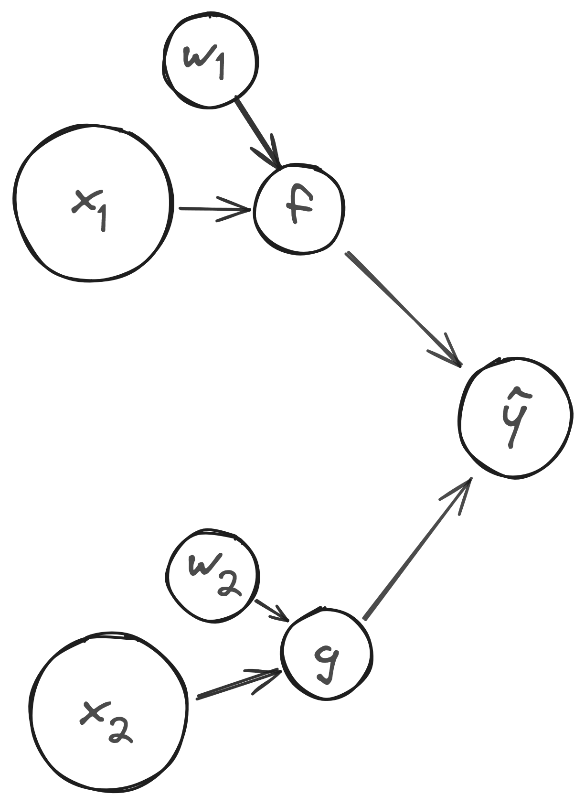</p> | || --- ### derivatives | | | | |---|---|---| | $f(a,b) = a \cdot b$ <br><br> $g(a,b) = a \cdot b$ <br><br> $\hat{y}(a,b) = a + b$ | $\frac{\partial f}{\partial a} = b \quad \frac{\partial f}{\partial b} = a$ <br><br> $\frac{\partial g}{\partial a} = b \quad \frac{\partial g}{\partial b} = a$ <br><br> $\frac{\partial \hat{y}}{\partial a} = 1 \quad \frac{\partial \hat{y}}{\partial b} = 1$ | | || --- ### **forward** pass <p>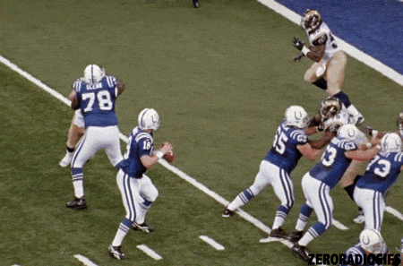</p> --- ### **forward** pass propagate values → **from inputs to output** --- ### **forward** pass | | | |---|---| | substitute numerical values <br> into each node from L to R | | || --- ### **forward** pass | | | |---|---| | substitute numerical values <br> → into each node from L to R <br><br> store every intermediate value <br> → needed during the backward pass | | || --- ### **forward** pass | | | |---|---| | substitute numerical values <br> → into each node from L to R <br><br> store every intermediate value <br> → needed during backward pass | <p>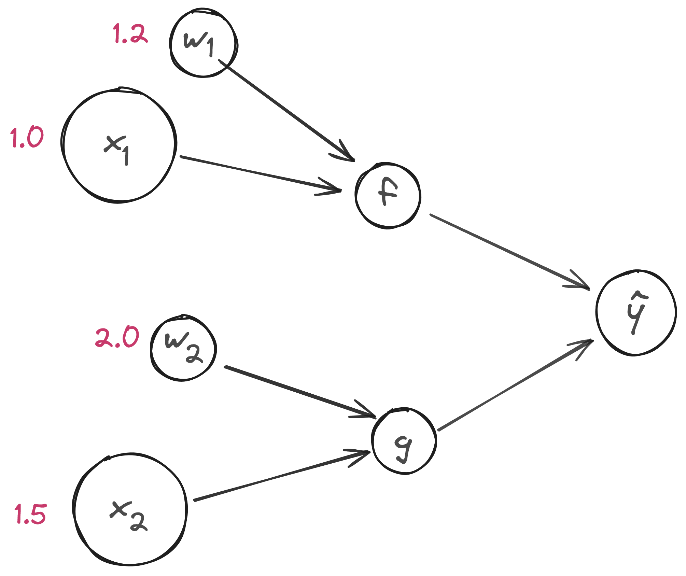</p> | || --- ### **forward** pass | step by step | | | |:---:|:---:| | <br> (1) | <p>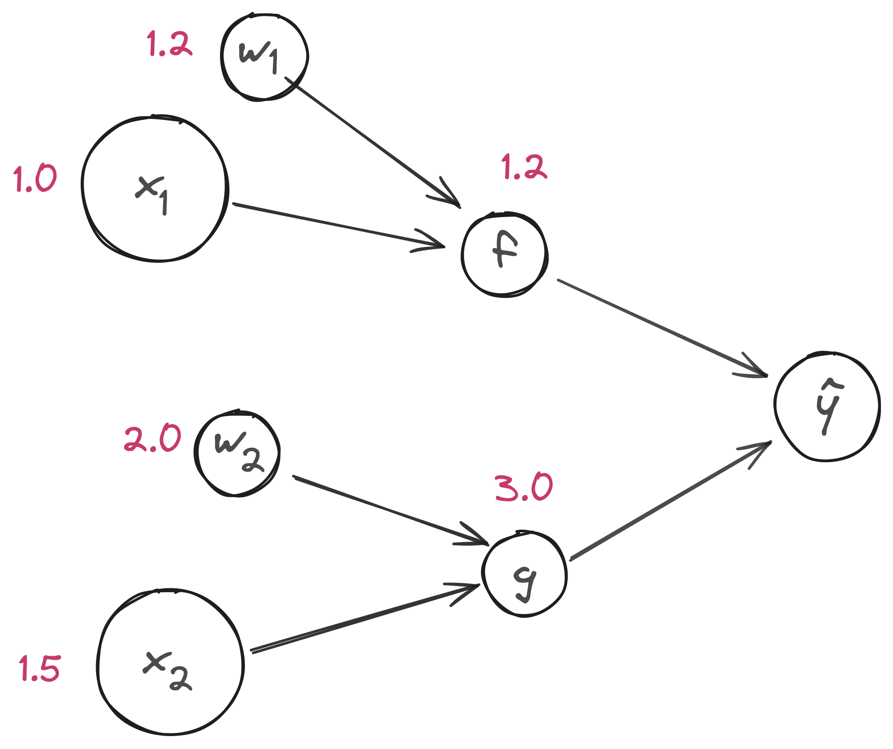</p> <br> (2) | || --- ### **forward** pass | step by step | | | | |:---:|:---:|:---:| | <br> (1) | <br> (2) | <p>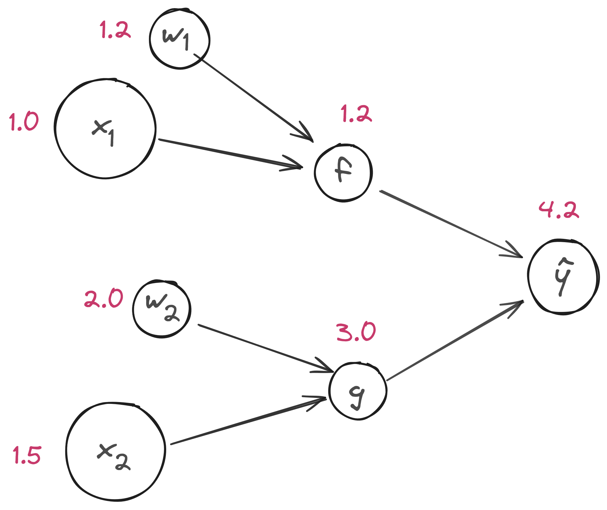</p> <br> (3) | || --- ### loss --- ### loss once $\hat{y}$ is computed → evaluate loss --- ### loss once $\hat{y}$ is computed → evaluate loss so, we can compute the **mean square error**, $$h = y - \hat{y} \qquad \mathcal{L} = h^2$$ --- ### loss | derivatives $$h = y - \hat{y} \qquad \mathcal{L} = h^2$$ <br> $$\frac{\partial h}{\partial \hat{y}} = -1 \qquad \frac{\partial \mathcal{L}}{\partial h} = 2h \qquad \frac{\partial \mathcal{L}}{\partial \hat{y}} = \frac{\partial \mathcal{L}}{\partial h} \cdot \frac{\partial h}{\partial \hat{y}} = -2(y - \hat{y})$$ --- ### loss node | | | |---|---| | starting point for **backward pass** | <p>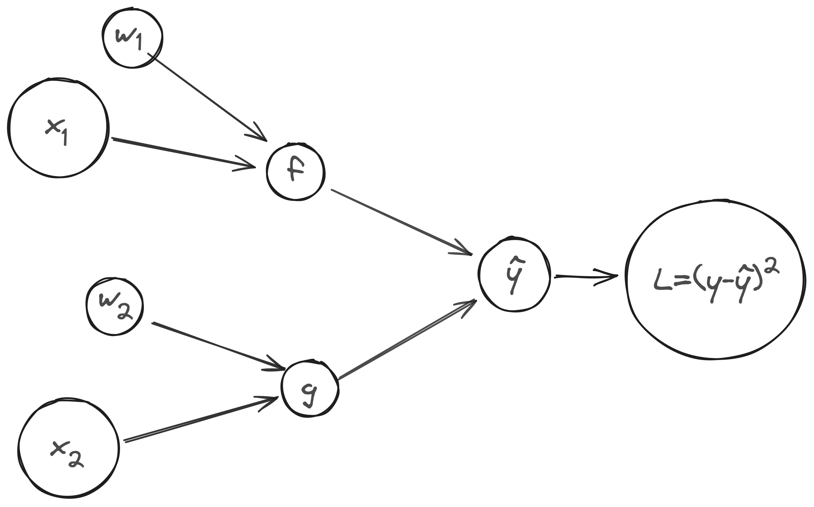</p> | || --- ### backward pass <p>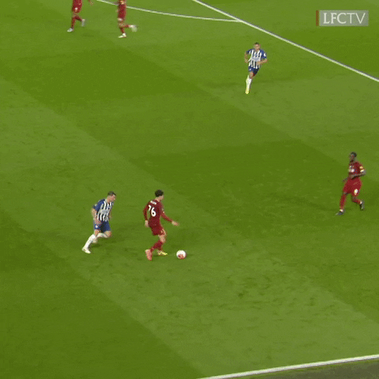</p> --- recall, $h = y - \hat{y} \qquad \mathcal{L} = h^2$ --- recall, $h = y - \hat{y} \qquad \mathcal{L} = h^2$ <br> so, the **loss function** is: $\frac{\partial \mathcal{L}}{\partial \hat{y}} = -2(y-\hat{y})$ --- we **decompose** loss graph → with intermediate variable, $h$ --- we **decompose** loss graph → with intermediate variable, $h$ <p>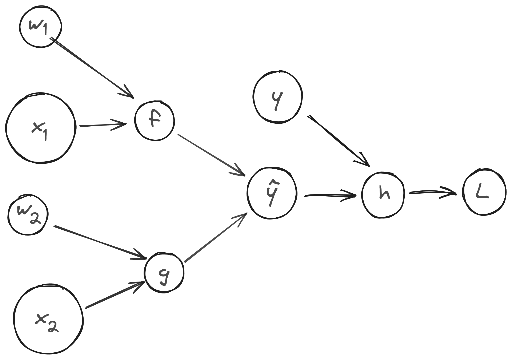</p> --- ### **backward** pass --- ### **backward** pass propagate gradients from loss → back through the graph --- ### **backward** pass propagate gradients from loss → back through the graph | | | |---|---| | start from loss node, work backwards | | || --- ### **backward** pass propagate gradients from loss → back through the graph | | | |---|---| | start from loss node, work backwards <br><br> multiplying upstream gradients <br> → by local derivatives at each step | | || --- ### **backward** pass propagate gradients from loss → back through the graph | | | |---|---| | start from loss node, work backwards <br><br> multiplying upstream gradients <br> → by local derivatives at each step | <p>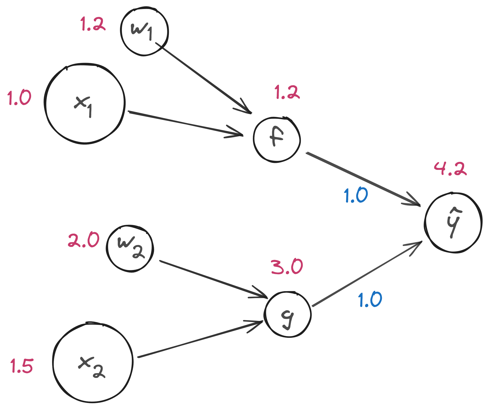</p> | || --- ### **backward** pass propagate gradients from loss → back through the graph | | | |---|---| | start from loss node, work backwards <br><br> multiplying upstream gradients <br> → by local derivatives at each step | | || gradients (in **${\color{blue}{blue}}$**) flow **right-to-left** --- ### **backward** pass propagate gradients from loss → back through the graph | | | |:---:|:---:| | <br> (1) | <p>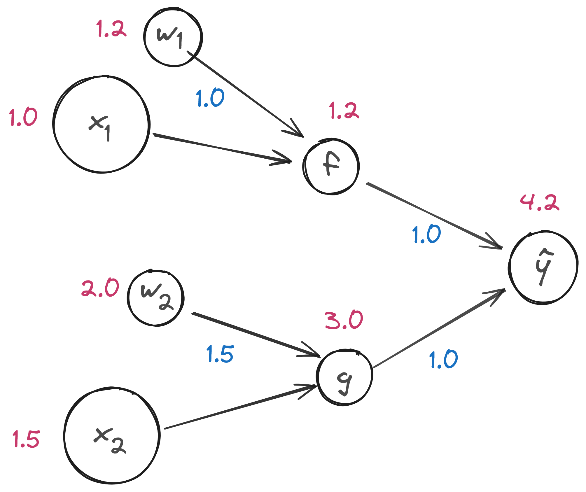</p> <br> (2) | || gradients (in **${\color{blue}{blue}}$**) flow **right-to-left** --- backward pass is **complete** --- backward pass is complete...but, we must **update the weights** --- we now have $\frac{\partial \mathcal{L}}{\partial w_1}$ and $\frac{\partial \mathcal{L}}{\partial w_2}$ --- we now have $\frac{\partial \mathcal{L}}{\partial w_1}$ and $\frac{\partial \mathcal{L}}{\partial w_2}$ → ready for weight update --- | | | |---|---| | forward values are stored <br> gradients **accumulate** as we traverse backwards | | || --- | | | |---|---| | forward values are stored <br> gradients **accumulate** as we traverse backwards | <p>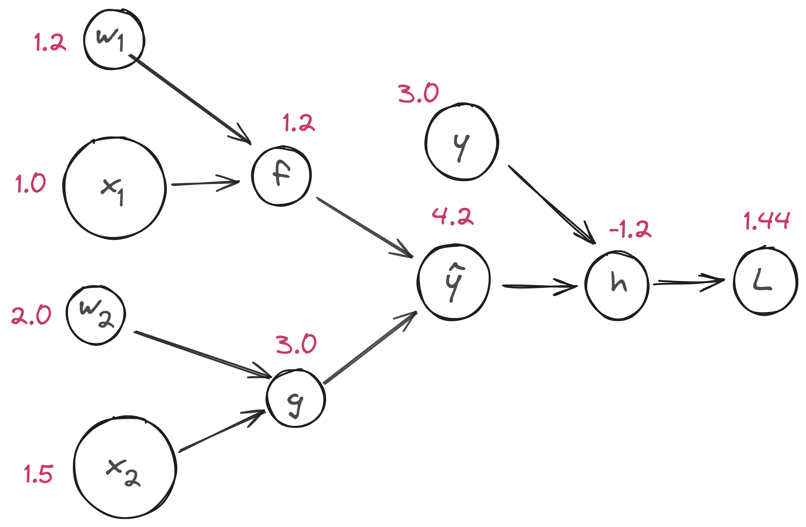</p> | || --- let's look at the complete backward sequence... --- ## backward | | | |---|:---:| | $\frac{\partial h}{\partial \hat{y}} = -1$ $\frac{\partial L}{\partial h} = 2\cdot h$ <br><br> $\frac{\partial f}{\partial a} = b \quad \frac{\partial f}{\partial b} = a$ <br><br> $\frac{\partial g}{\partial a} = b \quad \frac{\partial g}{\partial b} = a$ <br><br> $\frac{\partial \hat{y}}{\partial a} = 1 \quad \frac{\partial \hat{y}}{\partial b} = 1$ | <p>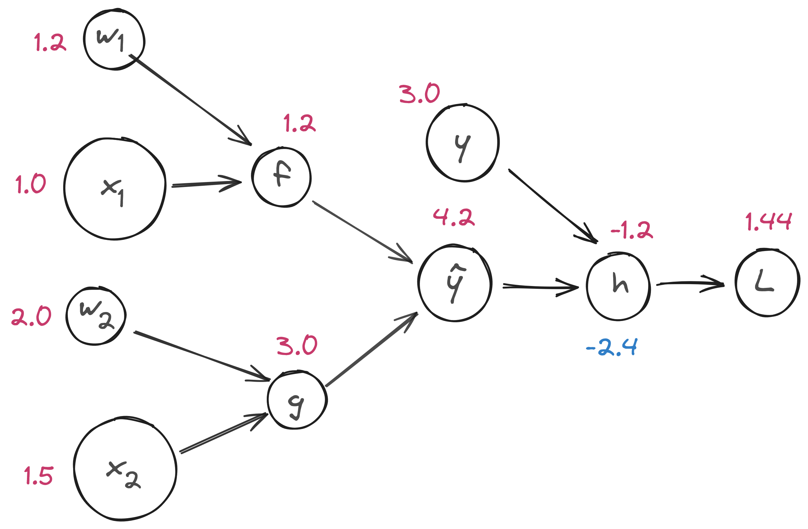</p> <br> (1) | || --- ## backward | | | |:---:|:---:| | <br> (1) | <p>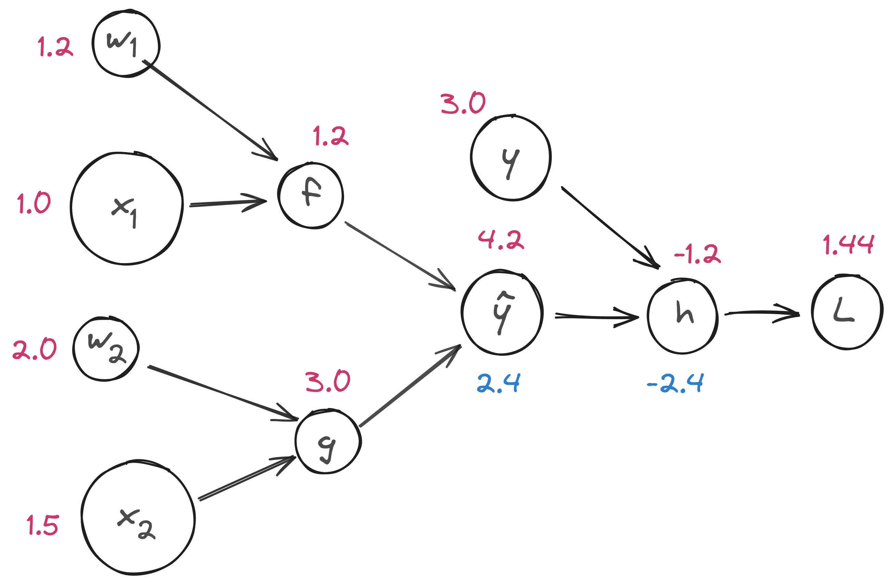</p> <br> (2) | || --- ## backward | | | | |:---:|:---:|:---:| | <br> (1) | <br> (2) |<p>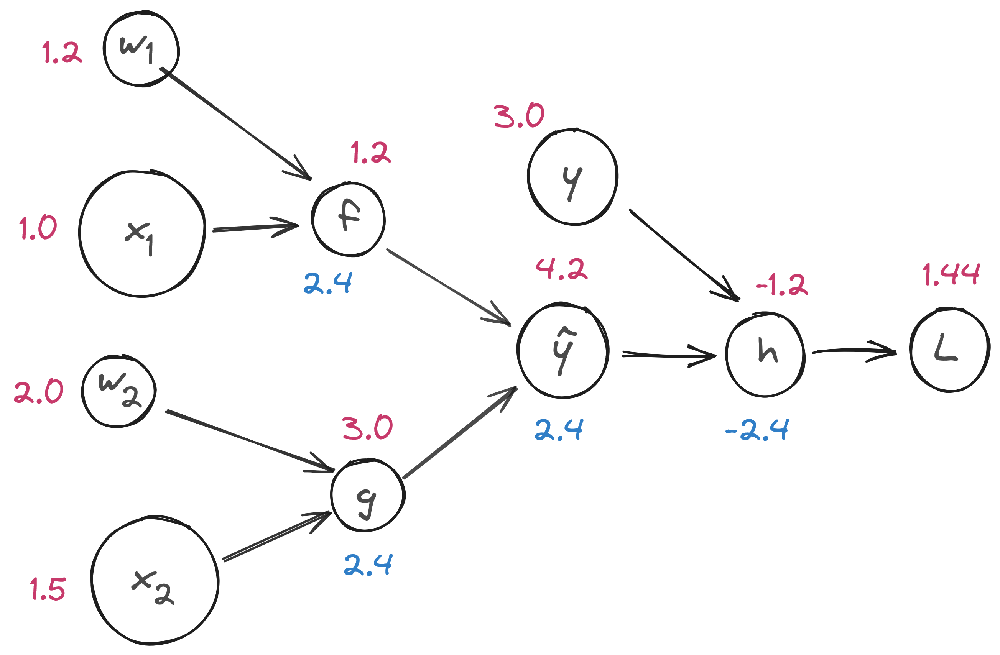</p> <br> (3) | || --- ## backward | | | | | |:---:|:---:|:---:|:---:| | <br> (1) | <br> (2) | <br> (3) | <p>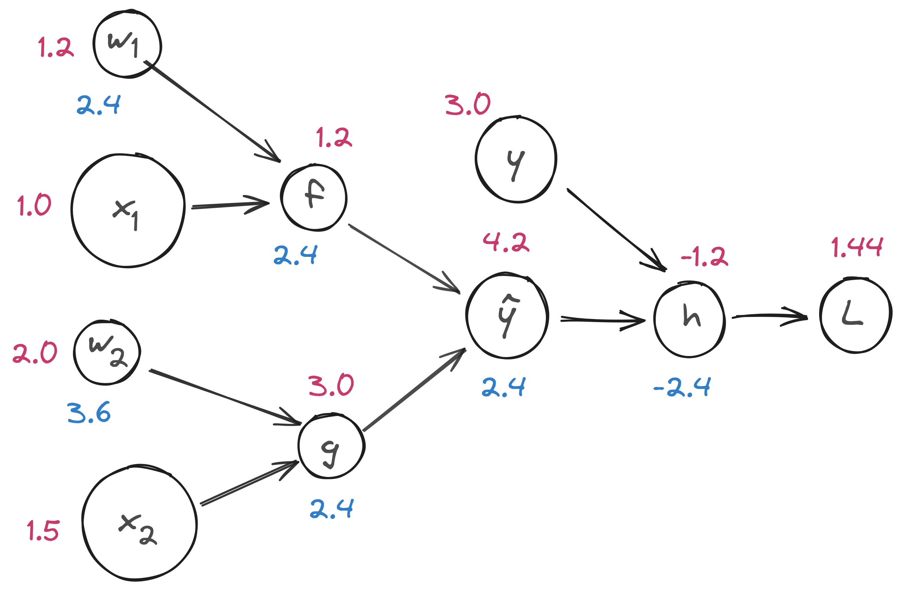</p> <br> (4) | || --- ### backward final state... --- ### nonlinearities --- ### nonlinearities linear activation function does poor job at --- ### nonlinearities linear activation function does poor job at **approximating non-linear relationships** --- a network composed of _only_ linear operations... --- a network composed of _only_ linear operations... **collapses** into a **single** linear transformation --- a network composed of _only_ linear operations... **collapses** into a **single** linear transformation <br> <br> _e.g.,_ a $100$ layer neural network collapses into $1$ layer! --- ### non-linear examples ||| |:---:|:---:| | <p>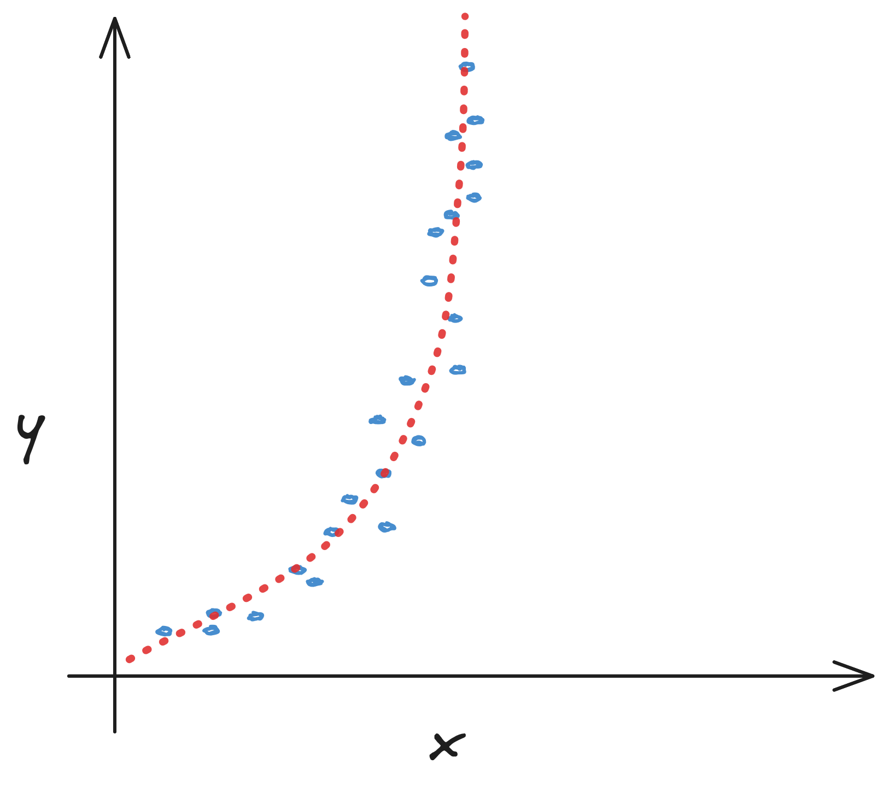</p> <br> parabolic decision boundary | <p>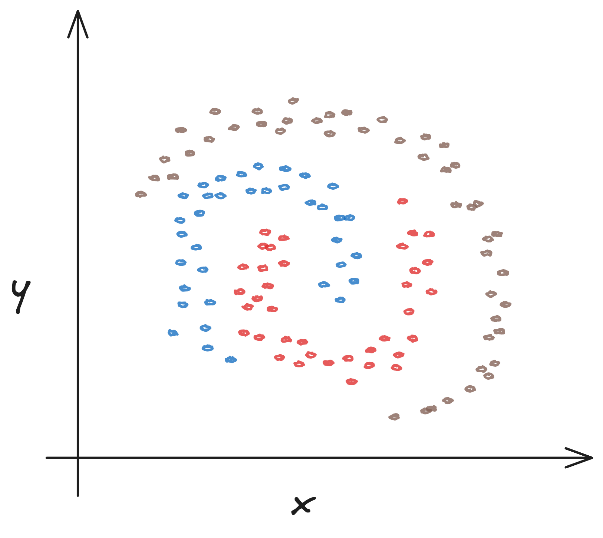</p> <br> multi-class problems <br> with non-linear boundaries | || --- to learn useful representations of complex data... (_e.g.,_ images, audio, languages) --- to learn useful representations of complex data... (_e.g.,_ images, audio, languages) <br> ### we need **non-linear activation functions** between layers --- ### enter **ReLU** --- ### enter **ReLU** (**Re**ctified **L**inear **U**nit) --- ### ReLU most widely used activation function in modern deep learning --- ### ReLU most widely used activation function in modern deep learning <p>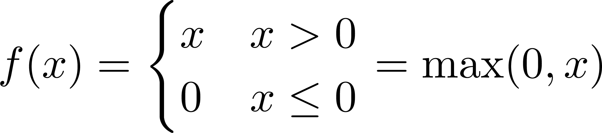</p> --- ReLU is **piecewise linear** --- | | | |---|---| | ReLU is **piecewise linear** <br> it passes **positive values unchanged** <br> **zeros** out **negative values** || || --- ### ReLU activation function | | | |---|:---| | ReLU is **piecewise linear** <br> it passes **positive values unchanged** <br> **zeros** out **negative values** | <p>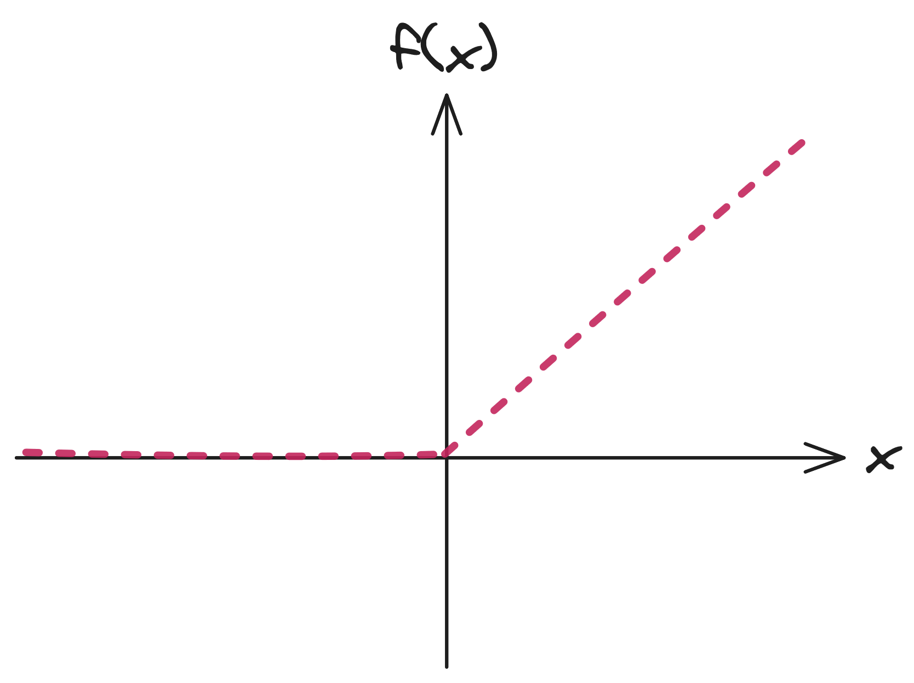</p> | || --- ### deriative of ReLU <p>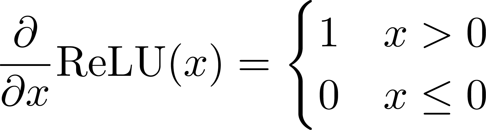</p> --- ### deriative of ReLU - computationally cheap - ReLU networks → train $6x$ faster than others Note: This piecewise-constant derivative is computationally cheap (just a comparison) and does not vanish for positive inputs, which greatly accelerates training compared to sigmoid and tanh activations that saturate and cause the *vanishing gradient problem*. Empirically, ReLU networks train roughly 6× faster than sigmoid networks of the same depth. --- ### backpropagation using ReLU --- ### backpropagation using ReLU | value | gradient effect| |-------|----------------| | $x > 0$ | passes through unchanged | --- ### backpropagation using ReLU | value | gradient effect| |-------|----------------| | $x > 0$ | passes through unchanged | | $x \leq 0$ | zeroed out | || --- ### backpropagation using ReLU | value | gradient effect| |-------|----------------| | $x > 0$ | passes through unchanged | | $x \leq 0$ | zeroed out | || creates **sparse** gradient flows → helps in **regularization** --- ### regularization - prevents model from **memorizing** data _i,e.,_ **overfitting** - can **generalize** for new data - node with negative input → blocks gradient --- ### how does ReLU help with nonlinearities? --- ### how does ReLU help with nonlinearities? it _looks_ like a straight line! --- ### how does ReLU help with nonlinearities? it _looks_ like a straight line! how does something that looks linear help with nonlinearities? --- ### how does ReLU help with nonlinearities? - **combination** of many ReLUs across a network Note: Think of a single ReLU as a sheet of paper being folded in half. One half is flat ($0$), and the other half slopes up. When you stack layers of thousands of ReLUs, you are combining thousands of these "folds." By the time you reach the output layer, the network has successfully bent, twisted, and folded a flat input space into a highly complex, curved, non-linear shape that can fit incredibly intricate data. --- ### how does ReLU help with nonlinearities? - **combination** of many ReLUs across a network - **piecewise** construction of a non-linear function --- - preserves the easy, fast optimization of linear functions - while yielding expressive power of non-linear functions --- ## deep learning architecture example <p>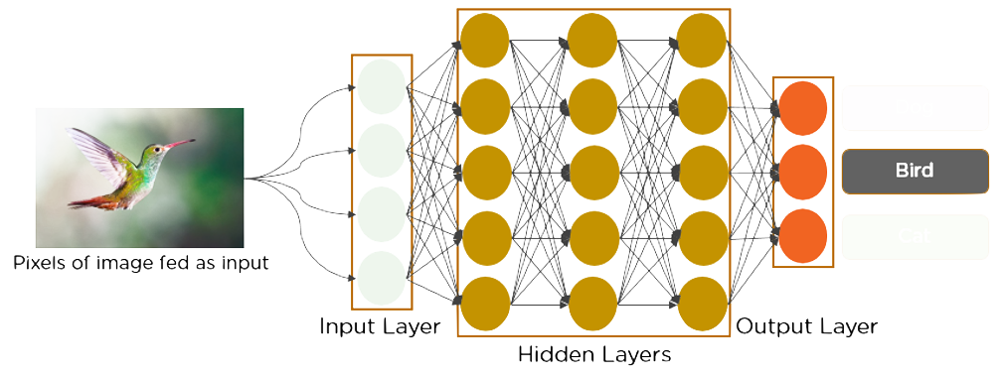</p> --- ### Deep-Learning Methods | **Object Detection** --- ### Deep-Learning Methods | **Object Detection** [convolutional neural networks](https://medium.com/@kattarajesh2001/convolutional-neural-networks-in-depth-c2fb81ebc2b2) (CNNs) for object detection --- ### Convolutional Neural Networks (CNNs) <p>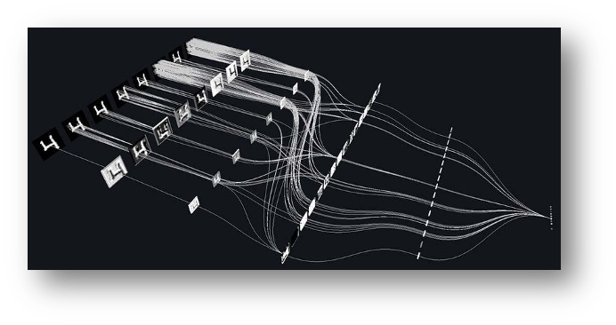</p> --- ### Convolutional Neural Networks (CNNs) class of deep learning neural networks --- ### Convolutional Neural Networks (CNNs) class of deep learning neural networks learns "features"` → "filter" (or kernel) optimization --- ### Convolutional Neural Networks (CNNs) **[convolution operations](https://en.wikipedia.org/wiki/Convolution)** at runtime --- ### Convolutional Neural Networks (CNNs) **[convolution operations](https://en.wikipedia.org/wiki/Convolution)** at runtime used in object detection → **classify** images from the camera --- but first, some basics... --- from simple graphs to **image models** --- from simple graphs to **image models** - computational graphs introduced earlier --- from simple graphs to **image models** - computational graphs introduced earlier - can now handle **images** --- from simple graphs to **image models** |2 input computational graph | | |---|---| | | | || --- |2 input computational graph | "deeper" CNN for image classification | |---|---| | | <p>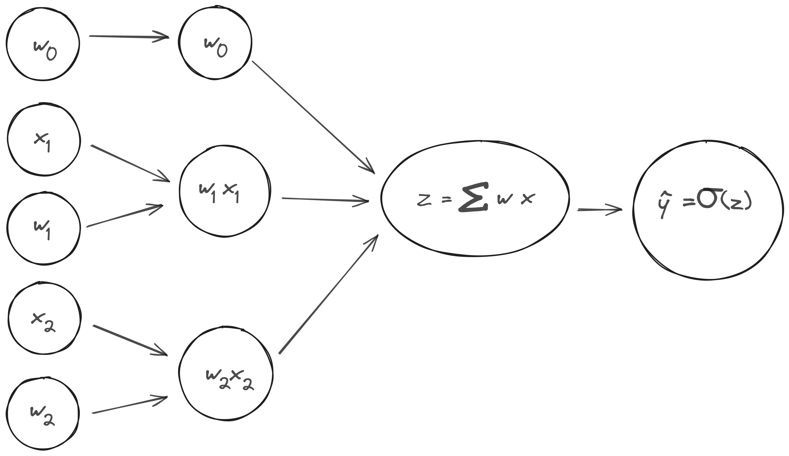</p> | || --- the output (of say YOLO)... --- the output (of say YOLO **+**)... <br> <br> [**+** more on this later...] --- the output (of say YOLO)... |code | | | |:---:|:---:|:---:| | <p>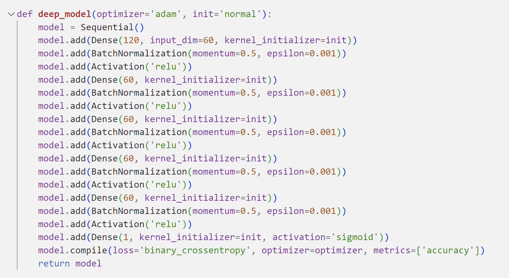</p> | || || --- the output (of say YOLO)... |code | inputs | | |:---:|:---:|:---:| | | <p>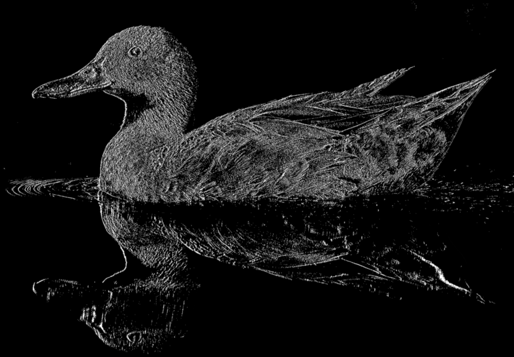</p> <br> <p>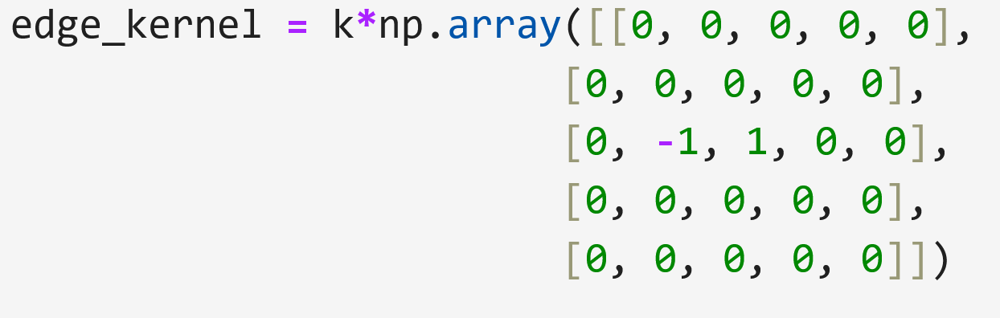</p> || || --- the output (of say YOLO)... |code | inputs | output | |:---:|:---:|:---:| | | <br> | | || --- ### images are now **tensors** --- ### tensors | $N$-dimensional arrays --- ### tensors | $N$-dimensional arrays |dimension type| number | descriptions| |--------|-------|---------| --- ### tensors | $N$-dimensional arrays |dimension type| number | descriptions| |--------|-------|---------| | **spatial** | 2 | height ($H$), width ($W$) | --- ### tensors | $N$-dimensional arrays |dimension type| number | descriptions| |--------|-------|---------| | **spatial** | 2 | height ($H$), width ($W$) | | **color channels** | 3 (or more) | $R$, $G$, $B$ ($C$) | --- ### tensors | $N$-dimensional arrays |dimension type| number | descriptions| |--------|-------|---------| | **spatial** | 2 | height ($H$), width ($W$) | | **color channels** | 3 (or more) | $R$, $G$, $B$ ($C$) | | **greyscale** | 1 | $Gr$ | || --- a **${\color{purple}{C}}{\color{blue}{O}}{\color{green}{L}}{\color{orange}{O}}{\color{red}{R}}$** image is a tensor, --- a **${\color{purple}{C}}{\color{blue}{O}}{\color{green}{L}}{\color{orange}{O}}{\color{red}{R}}$** image is a tensor, $$\mathbf{I} \in \mathbb{R}^{H \times W \times 3}$$ --- a **${\color{purple}{C}}{\color{blue}{O}}{\color{green}{L}}{\color{orange}{O}}{\color{red}{R}}$** image is a tensor, $$\mathbf{I} \in \mathbb{R}^{H \times W \times 3}$$ each entry → integer in $[0, 255]$ --- a **${\color{purple}{C}}{\color{blue}{O}}{\color{green}{L}}{\color{orange}{O}}{\color{red}{R}}$** image is a tensor, $$\mathbf{I} \in \mathbb{R}^{H \times W \times 3}$$ each entry → integer in $[0, 255]$ (or a float in $[0, 1]$ after normalisation) --- ### tensor | **example** --- ### tensor | **example** ||| |---|---| | <p>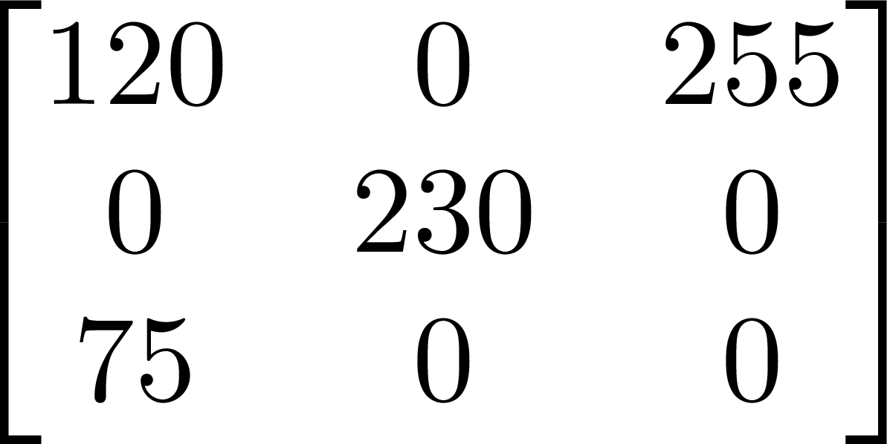</p> | <p>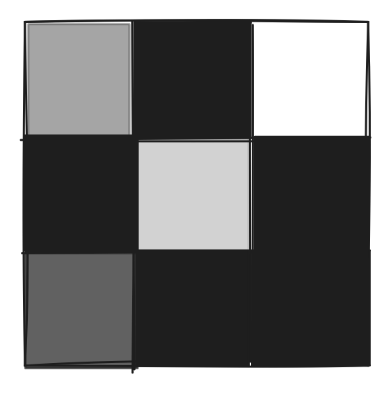</p>| || --- ### tensor | **example** ||| |---|---| | | | || grayscale image patch and its tensor representation --- a batch of $N$ images --- a batch of $N$ images → $4D$ tensor --- a batch of $N$ images → $4D$ tensor of shape [$N \times H \times W \times C$] --- a batch of $N$ images → $4D$ tensor of shape [$N \times H \times W \times C$] standard input format for GPU-accelerated CNN training --- coming back to CNNs... --- before deep learning --- before deep learning → **hand-crafted** image operations --- before deep learning → **hand-crafted** image operations ### edge detection --- ### edge detection - identifying **sharp transitions** in pixel intensity --- ### edge detection - identifying **sharp transitions** in pixel intensity - corresponding to **object boundaries** --- ### edge detection <p>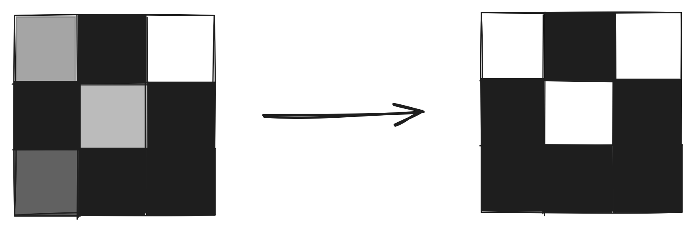</p> Note: - Edge detection applied to an image highlights structural content of the scene --- ### edge detection | **example** --- ### edge detection | **example** consider a photograph of a **brick house**, <p>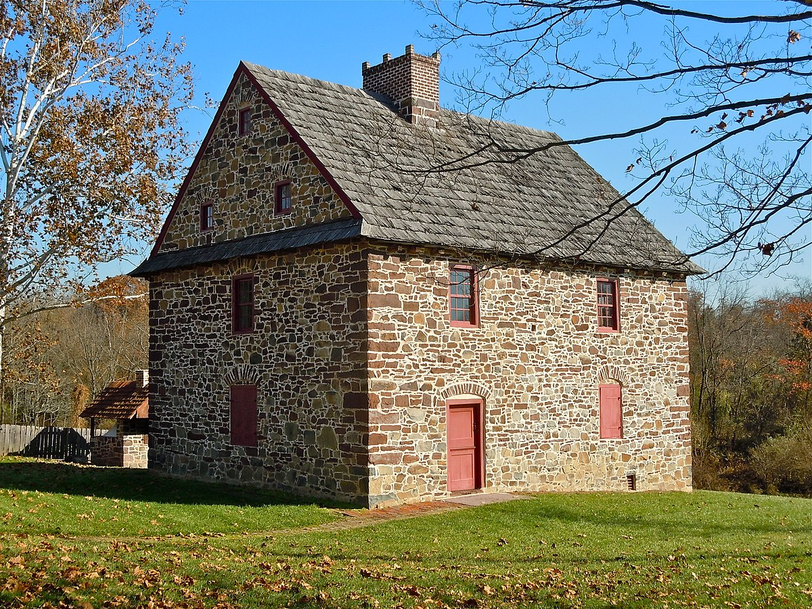</p> --- ### edge detection | **example** | original image | **after** edge detection | |:--------------:|:------------------------:| | | <p>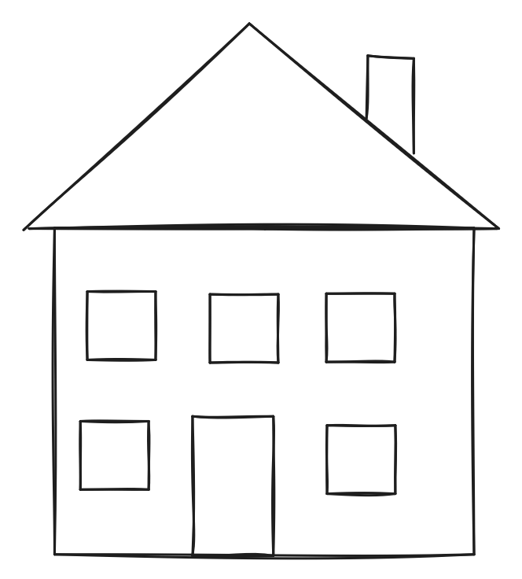</p> | Note: - Structure is preserved while texture is removed — a "stick figure" of the house --- edges are computed by **convolving** the image with a small filter --- edges are computed by **convolving** the image with a small filter - a small matrix → **slid across the image** --- edges are computed by **convolving** the image with a small filter - a small matrix → **slid across the image** - computes **dot products** at each position --- edges are computed by **convolving** the image with a small filter - a small matrix → **slid across the image** - computes **dot products** at each position - transforms the image → highlight **specific features** --- this operation — the **convolution** — is the core building block of CNNs --- what is a **convolution operation**? --- what is a **convolution operation**? operation on two functions, $f$ and $g$, to produce a third function --- what is a **convolution operation**? operation on two functions, $f$ and $g$, to produce a third function <p>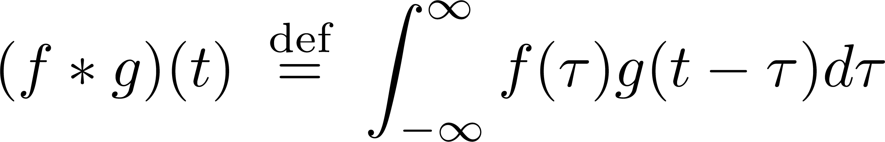</p> --- <p>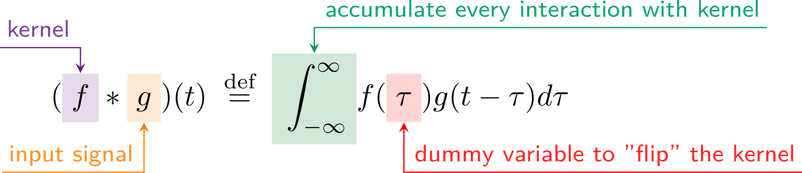</p> --- **integral of product** → after one is **reflected** about y-axis and shifted --- <!-- .slide: data-background="white" --> [visual examples](https://en.wikipedia.org/wiki/Convolution) of convolutions <br> <p>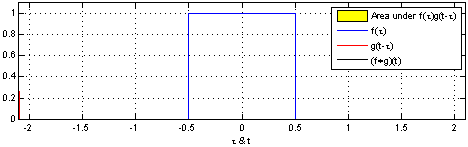</p> <p>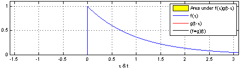</p> --- we are really interested in **discrete** convolutions --- ### discrete convolutions --- ### discrete convolutions (complex-valued) functions, $f$ and $g$ --- ### discrete convolutions (complex-valued) functions, $f$ and $g$ defined on the set $\mathbb{Z}$ of integers --- ### discrete convolutions (complex-valued) functions, $f$ and $g$ defined on the set $\mathbb{Z}$ of integers <br> $$ (f * g)[n]=\sum_{m=-\infty}^{\infty} f[m] g[n-m] $$ --- <!-- .slide: data-background="white" --> at a high level this can be visualized as, <p>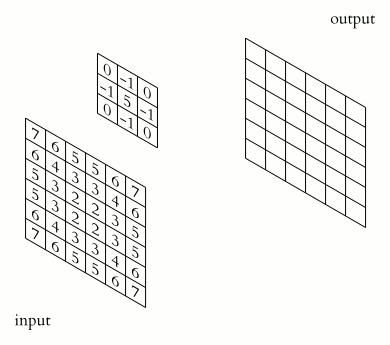</p> --- ### discrete convolutions - flipping one sequence --- ### discrete convolutions - flipping one sequence - shifting it across another --- ### discrete convolutions - flipping one sequence - shifting it across another - multiplying corresponding elements --- ### discrete convolutions - flipping one sequence - shifting it across another - multiplying corresponding elements - summing up the results over the range of overlap --- convolution **blends two functions** --- convolution **blends two functions** - **creates a third** function --- convolution **blends two functions** - **creates a third** function - represents how one function **modifies** the other --- ### convolutions applied to CNNs how **kernels** (that act as **filters**) → alter or transform input data --- ### Feature Detection via Learned Filters --- ### Feature Detection via Learned Filters images contain a **hierarchy of features** --- ### Feature Detection via Learned Filters images contain a **hierarchy of features** ||| |:-----|:------| |**low-level**| edges, corners, textures| --- ### Feature Detection via Learned Filters images contain a **hierarchy of features** ||| |:-----|:------| |**low-level**| edges, corners, textures| |**high-level**| eyes, wheels, faces| || --- images contain a **hierarchy of features** <p>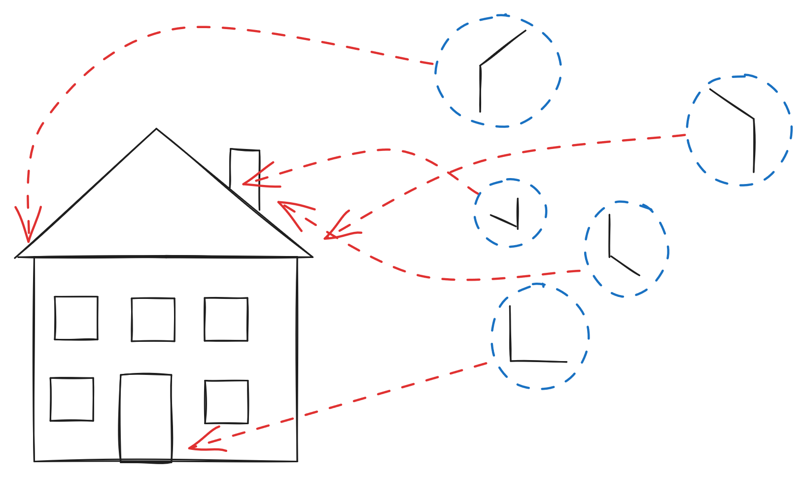</p> Note: - A hierarchy of visual features, from simple edges to complex object parts --- ### **kernel** (aka "convolution matrix" or "mask") --- ### kernels define a **kernel** (filter) --- ### kernels define a **kernel** (filter) → small **matrix** of **learned weights** --- ### kernels define a **kernel** (filter) → small **matrix** of **learned weights** - convolving image with kernel → produces a **feature map** --- ### kernels define a **kernel** (filter) → small **matrix** of **learned weights** - convolving image with kernel → produces a **feature map** - highlights **where** in the image that feature appears --- let's look at a simple example... --- let's look at a simple example... --- let's look at a simple example... --- let's look at a simple example... --- let's look at a simple example... --- let's look at a simple example... --- let's look at a simple example... --- let's look at a simple example... --- let's look at a simple example... --- let's look at a simple example... --- let's look at a simple example... --- values of given pixel in output image, --- values of given pixel in output image, **multiplying each kernel value by corresponding input image pixel values** --- kernel "**slides**" across the image --- kernel "**slides**" across the image - computing **element-wise products** - and **summing** them --- kernel "**slides**" across the image - computing **element-wise products** - and **summing** them produce each output value in feature map --- ### kernels | **examples** |operation|kernel/matrix| result| |:--------|:-------------:|:-------:| | identity | <font size="5">$\left[\begin{array}{lll}0 & 0 & 0 \newline 0 & 1 & 0 \newline 0 & 0 & 0\end{array}\right]$</font> | | --- ### kernel | **examples** |operation|kernel/matrix| result| |:--------|:-------------:|:-------:| | identity | <font size="5">$\left[\begin{array}{lll}0 & 0 & 0 \newline 0 & 1 & 0 \newline 0 & 0 & 0\end{array}\right]$</font> | | | ridge/edge detection| <font size="5">$\left[\begin{array}{rrr} -1 & -1 & -1 \newline -1 & 8 & -1 \newline -1 & -1 & -1\end{array}\right]$</font> | | --- ### kernel | **examples** |operation|kernel/matrix| result| |:--------|:-------------:|:-------:| | identity | <font size="5">$\left[\begin{array}{lll}0 & 0 & 0 \newline 0 & 1 & 0 \newline 0 & 0 & 0\end{array}\right]$</font> | | | ridge/edge detection| <font size="5">$\left[\begin{array}{rrr} -1 & -1 & -1 \newline -1 & 8 & -1 \newline -1 & -1 & -1\end{array}\right]$</font> | | | sharpen| <font size="5">$\left[\begin{array}{rrr}-1 & -1 & -1 \newline -1 & 8 & -1 \newline -1 & -1 & -1\end{array}\right]$</font> | | --- ### kernel | **examples** [contd.] |operation|kernel/matrix| result| |:--------|:-------------:|:-------:| | gaussian blur| <font size="5">$\frac{1}{256}\left[\begin{array}{ccccc}1 & 4 & 6 & 4 & 1 \newline4 & 16 & 24 & 16 & 4 \newline6 & 24 & 36 & 24 & 6 \newline4 & 16 & 24 & 16 & 4 \newline1 & 4 & 6 & 4 & 1 \end{array}\right]$</font> | | --- ### kernel | **examples** [contd.] |operation|kernel/matrix| result| |:--------|:-------------:|:-------:| | gaussian blur| <font size="5">$\frac{1}{256}\left[\begin{array}{ccccc}1 & 4 & 6 & 4 & 1 \newline4 & 16 & 24 & 16 & 4 \newline6 & 24 & 36 & 24 & 6 \newline4 & 16 & 24 & 16 & 4 \newline1 & 4 & 6 & 4 & 1 \end{array}\right]$</font> | | | unsharp masking| <font size="5">$\frac{-1}{256}\left[\begin{array}{ccccc}1 & 4 & 6 & 4 & 1 \newline4 & 16 & 24 & 16 & 4 \newline6 & 24 & -476 & 24 & 6 \newline4 & 16 & 24 & 16 & 4 \newline1 & 4 & 6 & 4 & 1\end{array}\right]$</font> | | || --- in its simplest form → convolution is defined as, > the process of adding each element of the image to its local neighbors, weighted by the kernel --- ### convolution | **pseudocode** ```[1-2|4|6-7|9|10-11|14] for each image row in input image: for each pixel in image row: set accumulator to zero for each kernel row in kernel: for each element in kernel row: if element position corresponding* to pixel position multiply element value corresponding* to pixel value add result to accumulator endif set output image pixel to accumulator ``` --- **general** form of a matrix convolution --- **general** form of a matrix convolution $$ \left[\begin{array}{cccc} x_{11} & x_{12} & \cdots & x_{1 n} \newline x_{21} & x_{22} & \cdots & x_{2 n} \newline \vdots & \vdots & \ddots & \vdots \newline x_{m 1} & x_{m 2} & \cdots & x_{m n} \end{array}\right] *\left[\begin{array}{cccc} y_{11} & y_{12} & \cdots & y_{1 n} \newline y_{21} & y_{22} & \cdots & y_{2 n} \newline \vdots & \vdots & \ddots & \vdots \newline y_{m 1} & y_{m 2} & \cdots & y_{m n} \end{array}\right] $$ --- **general** form of a matrix convolution <font size="11"> $$ \left[\begin{array}{cccc} x_{11} & x_{12} & \cdots & x_{1 n} \newline x_{21} & x_{22} & \cdots & x_{2 n} \newline \vdots & \vdots & \ddots & \vdots \newline x_{m 1} & x_{m 2} & \cdots & x_{m n} \end{array}\right] *\left[\begin{array}{cccc} y_{11} & y_{12} & \cdots & y_{1 n} \newline y_{21} & y_{22} & \cdots & y_{2 n} \newline \vdots & \vdots & \ddots & \vdots \newline y_{m 1} & y_{m 2} & \cdots & y_{m n} \end{array}\right]=\sum_{i=0}^{m-1} \sum_{j=0}^{n-1} x_{(m-i)(n-j)} y_{(1+i)} $$ </font> --- when specific kernel is applied to an image, --- when specific kernel is applied to an image, - it **modifies or transforms the image** --- when specific kernel is applied to an image, - it **modifies or transforms the image** - highlights or emphasizes → feature that kernel is specialized to detect --- when specific kernel is applied to an image, - it **modifies or transforms the image** - highlights or emphasizes → feature that kernel is specialized to detect - creates a **new representation** of original image --- when specific kernel is applied to an image, - it **modifies or transforms the image** - highlights or emphasizes → feature that kernel is specialized to detect - creates a **new representation** of original image - focusing on specific feature → encoded by applied kernel --- kernels come in various shapes --- **ReLU after convolution** --- **ReLU after convolution** - zero out **negative activations** --- **ReLU after convolution** - zero out **negative activations** - positions where the feature was **absent** --- **ReLU after convolution** Note: - Applying ReLU after convolution produces a non-negative feature map, highlighting positive matches of the filter pattern --- ### Stride --- ### Stride **stride** → how many pixels the filter moves at each step --- ### Stride **stride** → how many pixels the filter moves at each step |stride| result| |:-----|:------| |**1**| filter moves one pixel at a time| --- ### Stride **stride** → how many pixels the filter moves at each step |stride| result| |:-----|:------| |**1**| filter moves one pixel at a time| |**2**| filter skips every other position, **halving** output dimensions| || --- ### Stride --- ### Stride --- ### Stride --- ### Stride Note: - Stride 1 (dense) vs. larger strides. Increasing stride reduces the output spatial size. --- ### Stride for input width $W$, kernel size $f$, stride $S$, padding $P$, --- ### Stride for input width $W$, kernel size $f$, stride $S$, padding $P$, $$W_{\text{out}} = \left\lfloor \frac{W - f + 2P}{S} \right\rfloor + 1$$ Note: $W_{\text{out}}$ is the output width --- ### CNNs and kernels --- ### CNNs and kernels CNNs → **do not hand code** kernels to extract features --- ### CNNs and kernels CNNs → **do not hand code** kernels to extract features neural network **learns kernels** → extract different features --- **which** kernel to learn? --- **which** kernel to learn? up to the model! --- **which** kernel to learn? up to the model! <br> <br> whatever feature it wants to extract → CNN will **learn** the kernel --- ### "learned" kernels --- ### "learned" kernels - act as specialized filters that **modify input** --- ### "learned" kernels - act as specialized filters that **modify input** - highlighting specific patterns or structures --- ### "learned" kernels - act as specialized filters that **modify input** - highlighting specific patterns or structures - enabling network → learn and discern various features --- ### "learned" kernels - act as specialized filters that **modify input** - highlighting specific patterns or structures - enabling network → learn and discern various features essential for → image recognition, object detection, _etc._ --- ### Where Do Kernels Come From? --- ### Where Do Kernels Come From? | | | |---|---| | a CNN **learns** which kernels to use | | || --- ### Where Do Kernels Come From? | | | |---|---| | a CNN **learns** which kernels to use <br> through **backpropagation** | | || --- ### Where Do Kernels Come From? | | | |---|---| | a CNN **learns** which kernels to use <br> through **backpropagation** <br> directly from **labelled training data** | | || Note: - Rather than manually designing kernels (like the Sobel operator for edges), a CNN learns which kernels to use --- ### softmax --- ### softmax - classification problems with $C$ classes --- ### softmax - classification problems with $C$ classes - the final layer typically uses **softmax** function --- ### softmax - classification problems with $C$ classes - the final layer typically uses **softmax** function - to produce a **valid probability distribution over classes** --- ### softmax given a vector of raw scores (logits) $\mathbf{z} = [z_1, \ldots, z_C]$: --- ### softmax given a vector of raw scores (logits) $\mathbf{z} = [z_1, \ldots, z_C]$: $$p(y = j \mid \mathbf{x}) = \frac{e^{z_j}}{\sum_{k=1}^{C} e^{z_k}}$$ --- softmax ensures all class probabilities are **non-negative** and sum to $1$ --- the resulting framework → **Convolutional Neural Network** --- ### Multiple Filters in Parallel --- ### Multiple Filters in Parallel |filter type | result | |:-----------|:-------| | single filter | **one** feature map | --- ### Multiple Filters in Parallel |filter type | result | |:-----------|:-------| | single filter | **one** feature map <br> **one view** of the image | --- ### Multiple Filters in Parallel |filter type | result | |:-----------|:-------| | single filter | **one** feature map <br> **one view** of the image | | many in parallel | each learning different feature | --- ### Multiple Filters in Parallel |filter type | result | |:-----------|:-------| | single filter | **one** feature map <br> **one view** of the image | | many in parallel | each learning different feature <br> outputs **stacked** along new channel dimension | || --- ### Multiple Filters in Parallel Note: - Applying multiple filters in parallel. Each filter produces its own feature map; together they form a volume. --- applying $K$ filters --- applying $K$ filters - a **volume** of $K$ feature maps --- applying $K$ filters - a **volume** of $K$ feature maps - $K$ distinct **views** of the image --- example: consider a small patch of image of a car --- **three color channels** (R, G, B) --- s consider a **grayscale** image first (for simplicity): --- **one version** of convolution --- <!-- .slide: data-background="white" --> If we run it forward, this is what the result looks like: --- <div class="multicolumn"> <div style="vertical-align: text-top;"> <br> <br> <br> <br> <br> but...we deal with **color** images and **three** channels! </div> <div> </div> </div> --- we have to deal with, --- solution is simple...apply kernel to **each** channel! --- <!-- .slide: data-background="white" --> solution is simple...apply kernel to **each** channel! --- **combine**$^+$ them → **single output value** for that position --- **combine**$^+$ them → **single output value** for that position (+ usually **summed up**) --- <!-- .slide: data-background="white" --> **combine**$^+$ them → **single output value** for that position (+ usually **summed up**) Note: The "[bias](https://www.turing.com/kb/necessity-of-bias-in-neural-networks#)" helps in shifting the activation function and influences the feature maps’ outputs. This is a **constant** that is added to the product of features and weights. It is used to **offset the result**. It helps the models to shift the activation function towards the positive or negative side. --- ### Stacking Layers --- ### Stacking Layers - stacking **multiple convolutional** layers --- ### Stacking Layers - stacking **multiple convolutional** layers - **increasingly abstract** hierarchy of features --- ### Stacking Layers Note: - Multiple layers of convolution. Early layers detect simple features (edges); later layers detect complex features (object parts) by composing earlier features. --- ### Stacking Layers |layer| use | |:----:|:------| |**1**| detects edges, corners, colours| --- ### Stacking Layers |layer| use | |:----:|:------| |**1**| detects edges, corners, colours| |**2**| detects combinations of edges | --- ### Stacking Layers |layer| use | |:----:|:------| |**1**| detects edges, corners, colours| |**2**| detects combinations of edges <br> [textures, simple shapes] | --- ### Stacking Layers |layer| use | |:----:|:------| |**1**| detects edges, corners, colours| |**2**| detects combinations of edges <br> [textures, simple shapes] | |**3+**| detects object parts | --- ### Stacking Layers |layer| use | |:----:|:------| |**1**| detects edges, corners, colours| |**2**| detects combinations of edges <br> [textures, simple shapes] | |**3+**| detects object parts <br> eventually **whole objects**| || --- this **hierarchical representation** → power of deep CNNs --- ### Parameter Count --- ### Parameter Count for a convolutional layer with, --- ### Parameter Count for a convolutional layer with, | parameter | description | |:---------:|:------------| | $m \times m$ | kernel size | | $n$ | input channels | | $k$ | output filters | || --- ### Parameter Count number of **learnable parameters** = --- ### Parameter Count **learnable parameters** = $m \cdot m \cdot n \cdot k \quad \text{(without bias)}$ --- ### Parameter Count $$ \textbf{learnable parameters} = \begin{cases} m \cdot m \cdot n \cdot k & \text{(without bias)} \newline (m \cdot m \cdot n + 1) \cdot k & \text{(with bias)} \end{cases} $$ --- as network depth/filter count increase → parameter counts grow rapidly --- **parameter sharing** --- **parameter sharing** → same filter weights at every spatial position --- **parameter sharing** → same filter weights at every spatial position - a feature detector useful at **one position** → likely useful **everywhere** --- **parameter sharing** → same filter weights at every spatial position - a feature detector useful at **one position** → likely useful **everywhere** - far **fewer parameters** than an equivalent fully-connected layer --- ### Max Pooling --- ### Max Pooling - **max pooling** → reduces spatial dimensions of feature maps --- ### Max Pooling - **max pooling** → reduces spatial dimensions of feature maps - $2 \times 2$ max pooling with stride 2 - takes **maximum value** in each window --- ### max pooling | **example** --- ### max pooling | **example** --- ### max pooling | **example** --- ### max pooling | **example** Note: - Max pooling with a 2x2 window and stride 2. Each output value is the maximum in its window. --- **why max pooling?** --- **why max pooling?** | benefit | description | |:--------|:------------| | translational invariance | small shifts in input <br> do not change pooled output | --- **why max pooling?** | benefit | description | |:--------|:------------| | translational invariance | small shifts in input <br> do not change pooled output | | dimensionality reduction | controls computational cost | --- **why max pooling?** | benefit | description | |:--------|:------------| | translational invariance | small shifts in input <br> do not change pooled output | | dimensionality reduction | controls computational cost | | increased receptive field | later layers "see" <br> larger region of the image | || --- ### Flattening --- ### Flattening - after convolution and pooling - spatial feature volume must become → **fixed-length vector** --- **flattening** → reshape $3D$ feature volume into $1D$ vector --- ### flattening Note: - Flattening "unpacks" the feature volume into a 1xn vector, preparing it for fully-connected layers --- _e.g.,_ feature volume $7 \times 7 \times 512$ → vector of length $25{,}088$ --- > **Important note for YOLO**: <br> YOLO *does not* fully flatten to a 1D vector. <br> It preserves **spatial structure** in its output, producing a $7 \times 7 \times 30$ tensor --- --- so, then...what are cnns? --- so, then...what are cnns? - multiple layers of **artificial neurons** --- so, then...what are cnns? - multiple layers of **artificial neurons** - mathematical functions - calculate weighted sum of inputs/outputs --- so, then...what are cnns? - multiple layers of **artificial neurons** - mathematical functions - calculate weighted sum of inputs/outputs - on **activation value** --- - multiple layers of **artificial neurons** - **why** multiple layers? --- each layer has a **unique function** --- <!-- .slide: data-background="white" --> each layer has a **unique function** --- <!-- .slide: data-background="white" --> each layer has a **unique function** --- <!-- .slide: data-background="white" --> each layer has a **unique function** --- <!-- .slide: data-background="white" --> each layer has a **unique function** --- <!-- .slide: data-background="white" --> each layer has a **unique function** --- <!-- .slide: data-background="white" --> each layer has a **unique function** --- ### The Complete CNN Architecture --- ### The Complete CNN Architecture $$\text{INPUT} \rightarrow [\text{CONV} \to \text{ReLU}]^n \to \text{POOL} \to \cdots \newline \to [\text{FC} \to \text{ReLU}] \to \text{FC} \to \textbf{OUTPUT}$$ --- ### CNN architecture Note: - A complete CNN architecture: convolutional layers, pooling, flattening and fully-connected layers --- **fully-connected layers** (dense layers) --- **fully-connected layers** (dense layers) - connect **every neuron** in one layer to every neuron in the next --- **fully-connected layers** (dense layers) - connect **every neuron** in one layer to every neuron in the next - integrate information from across the **entire feature map** --- ### Different CNN Architectures --- many different architectures with trade-offs between, --- many different architectures with trade-offs between, - **accuracy** --- many different architectures with trade-offs between, - **accuracy** - **speed** --- many different architectures with trade-offs between, - **accuracy** - **speed** - **parameter efficiency** --- deeper networks → higher accuracy, more parameters/computation cost --- same classification task → very different network designs --- ### VGGNet: The Power of Depth --- ### VGGNet: The Power of Depth [Simonyan and Zisserman, 2015] --- ### VGGNet: The Power of Depth - **depth** → critical factor in network performance --- ### VGGNet: The Power of Depth - **depth** → critical factor in network performance - uses exclusively small $3 \times 3$ convolution filters throughout --- Note: - VGG-16 architecture. All convolutional filters are 3x3; five max pooling layers progressively reduce spatial dimensions --- **why only $3 \times 3$ filters?** --- two stacked $3 \times 3$ layers → same **effective receptive field** as $5 \times 5$ layer --- two stacked $3 \times 3$ layers → same **effective receptive field** as $5 \times 5$ layer but with **fewer parameters**: $2 \times 3^2 C^2 = 18C^2$ vs. $5^2 C^2 = 25C^2$